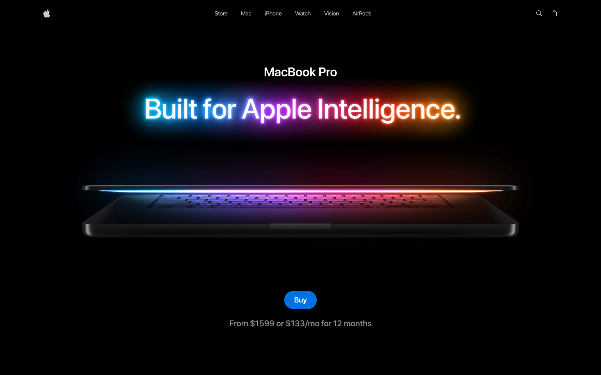

Product landing · interactive UI preview
MacBook Landing Page
A cinematic MacBook product page with 3D-led hero and product sections.
MUI
ORIGINAL SOURCE INTERFACE
MacBook Landing Page as shown by its source
Screenshot captured from the original app built in this workspace. The image is a reference; the local controls are in the interactive study below.

INTERACTIVE LOCAL STUDY
Explore the controls
MacBook Pro
Built for Apple Intelligence.
This CSS study follows the source page's opening composition. Open the original for its animation and product media.
View originalChoose a finish below
Finish: Silver
Built to handle ambitious work in a portable form.
SOURCE & INSTALLATION
Continue from the original project
No previous installation record found.
Source at pinned revision →No matching prior installation record found.
- Checkout
- Shallow source checkout
- Revision
8db2f8ad05c2- Licence noted
- No licence detected
- This page
- Local UI preview